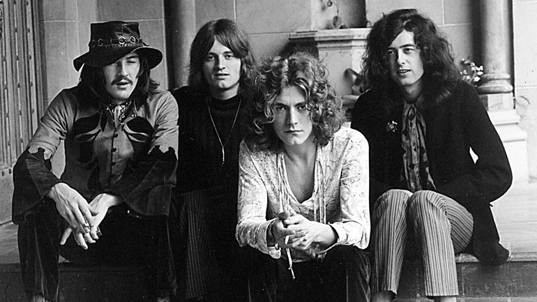

| Led Zeppelin | Queen | Black Sabbath | Aerosmith | About me |
Led Zeppelin
Led Zeppelin — британская рок-группа, образовавшаяся в сентябре 1968 года в Лондоне, Англия, и признанная одной из самых успешных, новаторских и влиятельных в современной истории.
Создав собственное звучание (для которого были характерны утяжелённый гитарный драйв, оглушающее звучание ритм-секции и пронзительный вокал), Led Zeppelin стали одной из ведущих групп хард-рока, сыграли основополагающую роль в становлении жанра хэви метал, свободно интерпретируя фолк- и блюз-классику и обогащая стиль элементами других музыкальных жанров (рокабилли, рэгги, соул, фанка, кантри).
Именно Led Zeppelin (согласно Allmusic), отказавшись от выпуска синглов, заложили основу понятия «альбомный рок».

Состав группы не менялся на протяжении всего её существования.
Immigrant song - одна из наиболее известных композиций группы.